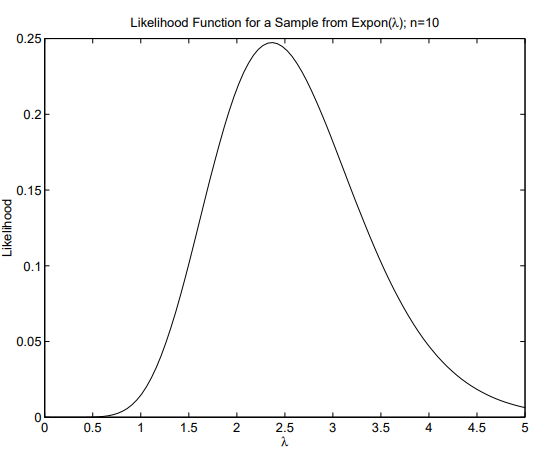
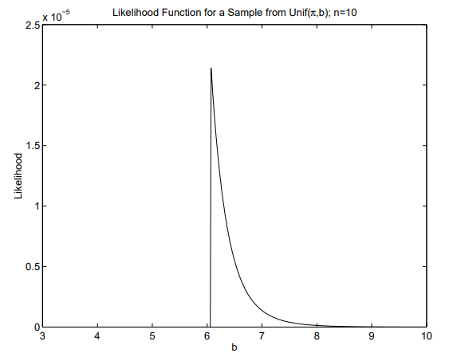
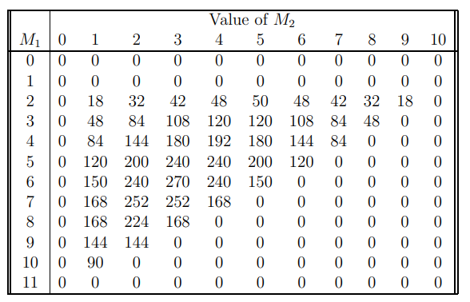
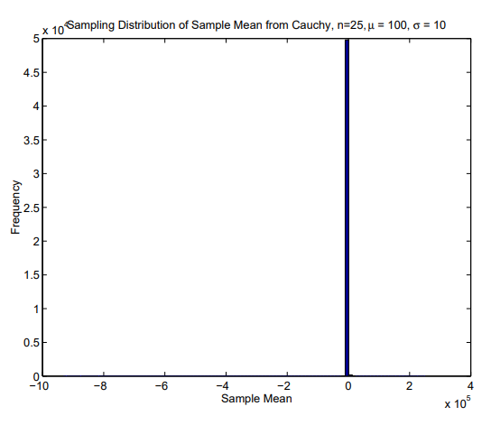
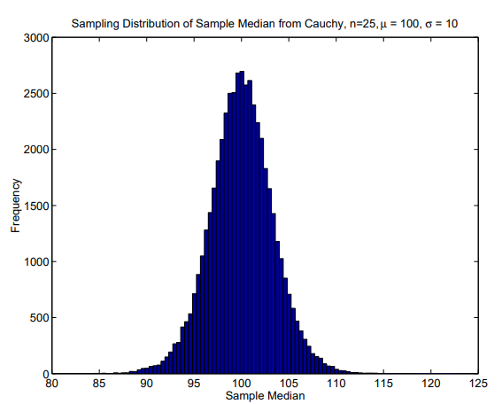
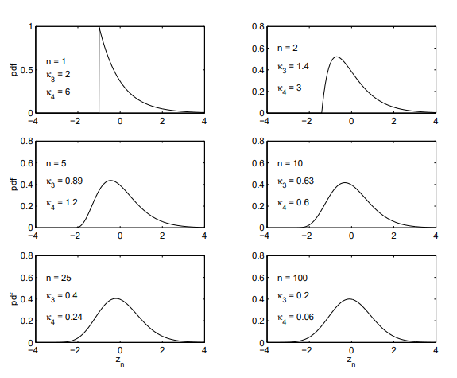

Chapter 8 Samples, Statistics, & Sampling Distributions
Definition: Parameter — A characteristic of the population.
Definition: Statistic — A characteristic of the sample. Specifically, a statistic is a function of the sample;
\[ T = g(X_1, X_2,\cdots,X_n) \]
and
\[ t =g(x_1, x_2,\cdots,x_3) \]
The function \(T\) is a random variable and the function \(t\) is a realization of the random variable. For example, \(T_1 =\bar{X}\) and \(T_2 = S^2_X\) are statistics.
Definition: Sampling Distribution — A sampling distribution is the distribution of a statistic. For example, the sampling distribution of \(\bar{X}\) is the distribution of \(\bar{X}\)
8.1 Random Sampling
- Some non-random samples
- Voluntary response sample: the respondent controls whether or not s/he is in the sample.
- Sample of convenience: the investigator obtains a set of units from the population by using units that are available or can be obtained inexpensively.
- Random sampling from a finite population
- Procedure: select units from the population at random, one at a time.
- Sampling can be done with or without replacement.
Properties of random sampling
The distribution of the sample is exchangeable.
All possible samples of size \(n\) are equally likely (this is the definition of a simple random sample).
Each unit in the population has an equal chance of being selected.
Definition: Population Distribution—the marginal distribution of \(X_i\), where \(X_i\) is the value of the \(i^{th}\) unit in the sample.
- Note, the marginal distribution of all \(X_i\)s are identical by exchangeability.
Random sample of size \(n\)
- In general, a random sample of size \(n\) has many possible meanings (e.g., with replacement, without replacement, stratified, etc.).
We will say “random sample of size \(n\)” when we mean a sequence of independent and identically distributed (iid) random variables.
- This can occur if one randomly samples from a finite population with replacement, or randomly samples from an infinite population.
- Unless it is qualified, the phrase “random sample of size \(n\)” refers to iid random variables and does not refer to sampling without replacement from a finite population.
The joint pdf or pmf of a random sample of size \(n\) is denoted by
\[ f_X(X) \overset{def}= f_{X_1, X_2,\cdots,X_n}(x_1,x_2,\cdots,x_3) \]
where \(X\) and \(X\) are vectors of random variables and realizations, respectively. That is
\[ X = \begin{pmatrix} X_1 \\ X_2 \\ \vdots \\ X_n \\ \end{pmatrix} and \ x=\begin{pmatrix} x_1 \\ x_2 \\ \vdots \\ x_n \\ \end{pmatrix} \]
- The transpose of a column vector \(U\) is denoted by \(U'\). For example,
\[ X' = (X_1 \ X_2 \cdots X_n) \]
- Using independence,
\[ f_X(X) = \prod f_X{(x_i)} \]
- Example: Suppose that \(X_1, X_2,\cdots, X_n\) is a random sample of size \(n\) from an \(Exp(\lambda)\) distribution. Then the joint pdf of the sample is
\[ f_X(X)= \prod^n_{i=1}\lambda e^{-\lambda x_i} I_{(0, \infty)}(x_i) = \lambda^n \exp \Bigg\{ -\lambda \sum^n_{i=1} x_i \Bigg\}I_{(0,x_{(n)}]}(x_{(1)})I_{[x_{(1)},\infty)}(x_{(n)}) \]
- Example: Suppose that \(X_1, X_2, \cdots, X_n\) is a random sample of size \(n\) from \(Unif[a, b]\). Then the joint pdf of the sample is
\[ f_X(X)= \prod^n_{i=1}(b-a)^{-1} I_{[a,b]}(x_i) = (b-a)^n I_{[a,x_{(n)}]}(x_{(1)})I_{[x_{(1)},b]}(x_{(n)}) \]
- PMF of a random sample taken without replacement from a finite population. Consider a population of size \(N\) having \(k \le N\) distinct values.
- Denote the values as \(v_1, v_2, \cdots, v_k\).
- Suppose that the population contains \(M_1\) units with value \(v_1\), \(M_2\) units with value \(v_2\), etc.
- Note that \(N = \sum^k_{j=1}= M_j\).
- Select \(n\) units at random without replacement from the population.
- Let \(X_i\) be the value of the \(i^{th}\) unit in the sample and denote the \(n \times 1\) vector of \(X\)s by \(X\).
- Let \(x\) be a realization of \(X\).
- That is, \(x\) is an \(n \times 1\) vector whose elements are chosen from \(v_1, v_2, \cdots, v_k\).
- Then the pmf of the sample is
\[ f_X(X) = P(X=x) = \frac{\displaystyle\prod^k_{j=1} \begin{pmatrix} M_j \\ y_j \end{pmatrix}} {\begin{pmatrix} N \\ n \end{pmatrix} \begin{pmatrix} n \\ y_1, y_2,\cdots,y_n \end{pmatrix}} \]
where \(y_i\) is the frequency of \(v_j\) in \(X\).
- Proof: Let \(Y_j\) for \(j=1,\cdots,k\) be the frequency of \(v_j\) in \(X\).
- Note that \(\sum^k_{j=1}Y_j=n\).
- Denote the vector of Ys by \(Y\) and the vector of \(y\)s by \(y\).
- Also, denote the number of distinct \(X\) sequences that yield \(y\) by \(n_y\).
- Then
\[ f_Y(y) = Pr(Y=y) = f_x(x) \times n_y \]
where \(f_X(X)\) is the probability of any specific sequence of \(x\)’s the contains \(y_1\) units with value \(v_1, y_2\) units with \(v_2\), etc.
- Multiplication of \(f_X(X)\) by \(n_y\) is correct because each permutation of \(X\) has the same probability (by exchangeability). We can show that
\[ f_Y(y) = \frac{\displaystyle\prod^k_{j=1} \begin{pmatrix} M_j \\ y_j \end{pmatrix}} {\begin{pmatrix} N \\ n \end{pmatrix}}\] and \[ n_y =\begin{pmatrix} n \\ y_i , y_2,\cdots,y_n \end{pmatrix} \]
- Accordingly, the pmf of the sample is
\[ f_X(X) = \frac{\displaystyle\prod^k_{j=1} \begin{pmatrix} M_j \\ y_j \end{pmatrix}} {\begin{pmatrix} N \\ n \end{pmatrix} \begin{pmatrix} n \\ y_1, y_2,\cdots,y_n \end{pmatrix}} \]
- Example: Consider the population consisting of 12 voles, \(M_j\) voles of species \(j\)
for \(j = 1, 2, 3\).
- Suppose that \(X_1, X_2, X_3, X_4\) is a random sample taken without replacement from the population.
- Furthermore, suppose that
\[ X= (s_3 \ s_1 \ s_1 \ s_2)' \]
where \(s_j\) denotes species \(j\).
- The joint pdf of the sample \(i\)
\[ \begin{align} f_X(s_3, s_1, s_1, s_2) &= \frac{\begin{pmatrix} M_1 \\ 2 \end{pmatrix} \begin{pmatrix} M_2 \\ 1 \end{pmatrix} \begin{pmatrix} M_3 \\ 2 \end{pmatrix}}{\begin{pmatrix} 12 \\ 4 \end{pmatrix}\begin{pmatrix} 4 \\ 2,1,1 \end{pmatrix}} \\ &= \frac{\frac{1}{2}M_1(M_1 -1)M_2M_3}{495 \times 12} \\ &=\frac{M_1(M_1 -1)M_2(12-M_1-M_2)}{11,880} \end{align} \]
8.2 Likelihood
- Family of probability distributions or models: If the joint pdf or pmf of the sample depends on the value of unknown parameters, then the joint pdf or pmf is written as
\[ f_X(x|\theta) \text{ where } \theta =(\theta_1 \ \theta_2 \ \cdots \theta_k)' \]
is a vector of unknown parameters.
- For example, if \(X_1,\cdots, X_n\) is a random sample of size \(n\) from \(N(\mu, \sigma^2)\), where \(\mu\) and \(\sigma^2\) are unknown, then the joint pdf is
\[ f_X(x|\theta) = f_X(x|/mu, \sigma^2) = \frac{exp \Bigg\{\frac{1}{2\sigma^2}\displaystyle\sum^n_{i=1}(x_i -\mu)^2\Bigg\}}{(2\pi\sigma^2)^{n/2}}, \ where \ \theta =\begin{pmatrix}\mu \\ \sigma^2 \end{pmatrix} \]
If \(\theta\) contains only one parameter, then is will be denoted as \(\theta\) (i.e., no bold face).
Likelihood Function: The likelihood function is a measure of how likely a particular value of \(\theta\) is, given that x has been observed.
- Caution: the likelihood function is not a probability.
- The likelihood function is denoted by \(L(\theta)\) and is obtained by interchanging the roles of \(\theta\) and \(x\) in the joint pdf or pmf of \(x\), and dropping all terms that do not depend on \(\theta\). That is,
\[ L(\theta) = L(\theta|x) \propto f_x(x|\theta) \]
- Example: Suppose that \(X_1, X_2, \cdots , X_n\) is a random sample of size \(n\) from an \(Exp(\lambda)\) distribution. Then the likelihood function is
\[ L(\lambda) = \lambda^n\exp\Bigg\{-\lambda \displaystyle\sum^n_{i=1}x_i\Bigg\}\]
provided that all \(x\)s are in \((0, \infty)\).
- Note that the likelihood function and the joint pdf are identical in this example. Suppose that \(n = 10\) and that
\[ x = (0.4393 \ 0.5937 \ 0.0671 \ 2.0995 \ 0.1320 \ 0.0148 \ 0.0050 \ 0.1186 \ 0.4120 \ 0.3483)' \]
has been observed.
The sample mean is \(\bar x = 4.2303/10 = 0.42303\).
The likelihood function is plotted below.
- Ratios are used to compare likelihoods.
- For example, the likelihood that \(\lambda = 2.5\) is \(1.34\) times as large as the likelihood that \(\lambda = 3\);
\[ \frac{L(2.5)}{L(3)} = 1.3390 \]
- Note: the \(x\) values actually were sampled from \(Exp(2)\).

- Example: Suppose that \(X_1, X_2, \cdots , X_n\) is a random sample of size \(n\) from \(Unif[\pi, b]\). Then the likelihood function is
\[ L(b) = (b-\pi)^{-n}I_{[x_{(n)},\infty](b)} \]
provided that \(x_{(1)} \gt \pi\).
- Suppose that \(n = 10\) and that
\[ x = (5.9841 \ 4.9298 \ 3.7507 \ 5.1264 \ 3.8780 \ 4.8656 \ 6.0682 \ 4.1946 \ 5.2010 \ 4.3728)' \]
has been observed.
- For this sample, \(x_{(1)} = 3.7507\) and \(x_{(n)} = 6.0682\).
- The likelihood function is plotted below.
- Note, the \(x\) values actually were sampled from \(Unif(\pi, 2\pi)\).

- Example: Consider the population consisting consisting of \(12\) voles, \(M_j\) voles
of species \(j\) for \(j = 1, 2, 3\).
- Suppose that \(X_1, X_2, X_3, X_4\) is a random sample taken without replacement from the population.
- Furthermore, suppose that
\[ X = (s_3 \ s_1 \ s_1 \ s_2)' \]
where \(s_j\) denotes species \(j\).
- The likelihood function is
\[ L(M_1,M_2) = M_1(M_1 -1)M_2(12-M_1-M_2) \]
Note, there are only two parameters, not three, because \(M_1 + M_2 + M_3 = 12\).
The likelihood function is displayed in the table below.
- Note: the \(x\) values actually were sampled from a population in which \(M_1 = 5, M_2 = 3\), and \(M_3 = 4\).

Likelihood Principle
All the information which the data provide concerning the relative merits of two hypotheses is contained in the likelihood ratio of those hypotheses on the data (Edwards, 1992).
Another way of stating the likelihood principal is that if two experiments, each based on a model for \(\theta\), give the same likelihood, then the inference about \(\theta\) should be the same in the two experiments.
Example
- Experiment 1: Toss a 35 cent coin \(n\) independent times. Let \(\theta\) be the probability of a head and let \(X\) be the number of heads observed. Then \(X\) has a binomial pmf:
\[ f_X(x|\theta) = \begin{pmatrix} n \\x \end{pmatrix}\theta^x (1-\theta)^{n-x}I_{\{0,1,\cdots,n\}}(x) \]
where \(n = 20\).
- Suppose that \(x = 6\) heads are observed. Then the likelihood function is
\[ L(\theta|x=6) = \theta^6(1-\theta)^{14} \]
- Experiment 2: The 35 cent coin was tossed on independent trials until \(r = 6\) heads were observed. Let \(Y\) be the number of tosses required to obtain 6 heads. Then \(Y\) has a negative binomial pmf:
\[ f_Y(y|\theta,r) = \begin{pmatrix} y-1 \\ r-1 \end{pmatrix}\theta^y(1-\theta)^{y-r}I_{\{r,r+1,\cdots\}}(y) \]
where \(r=6\).
- Suppose that the \(6^{th}\) head occurred on the \(20^{th}\) trial. Then, the likelihood function is
\[ L(\theta|y=20) =\theta^6(1-\theta)^{14} \]
The likelihood principal requires that any inference about \(\theta\) be the same from the two experiments.
Suppose that we would like to test \(H_0 : \theta = 0.5\) against \(H_{\alpha} : \theta < 0.5\).
Based on the above two experiments, the \(p\)-values are
\[ P(X \le 6|n=20, \theta=0.5 = \displaystyle\sum^6_{x=0} \begin{pmatrix} 20 \\x \end{pmatrix}(1/2)^x(1-1/2)^{20-x}=0.0577 \]
in the binomial experiment and
\[ P(X \ge 20|r=6, \theta=0.5 = \displaystyle\sum^{\infty}_{y=20} \begin{pmatrix} y-1 \\6-1 \end{pmatrix}(1/2)^6(1-1/2)^{y-6}=0.0318 \]
in the negative binomial experiment.
- If we fail to reject \(H_0\) in the first experiment, but reject \(H_0\) in the second experiment, then we have violated the likelihood principle.
8.3 Sufficient Statistics
- Some definition: A statistic, \(T = t(X)\), is sufficient for a family of distributions, \(f_X(X|\theta)\), if and only if the likelihood function depends on \(X\) only through \(T\):
\[ L(\theta) = h[t(X), \theta] \]
- Usual definition: A statistic, \(T = t(X)\), is sufficient for a family of distributions, \(f_X(x|\theta)\), if and only if the conditional distribution of \(X\) given \(T\) does not depend on \(\theta\):
\[ f_{X|T}(x|t,\theta) = h(x) \]
This definition says that after observing \(T\), no additional functions of the data provide information about \(\theta\). It can be shown that the two definitions are equivalent.
Sample Space and Partitions: The sample space is the set of all possible values of \(X\).
It is the same as the support for the joint pdf (or pmf) of \(X\).
A statistic partitions the sample space. Each partition corresponds to a different value of of the statistic.
A specific partition contains all possible values of \(X\) that yield the specific value of the statistic that indexes the partition.
If the statistic is sufficient, then the only characteristic of the data that we need to examine is which partition the sample belongs to.
Non-uniqueness of the sufficient statistic: If \(T\) is a sufficient statistic, then any one-to-one transformation of \(T\) also is sufficient.
Note that any transformation of \(T\) induces the same partitioning of the sample space. Accordingly, the sufficient statistic is not unique, but the partitioning that corresponds to \(T\) is unique.
Factorization Criterion (Neyman): A statistic, \(T = t(X)\) is sufficient if and only if the joint pdf (pmf) factors a
\[ f_X(X|\theta) = g[t(X)|\theta]h(X) \]
- In some cases, \(h(X)\) is a trivial function of \(X\).
- For example, \(h(X) = c\), where \(c\) is a constant not depending on \(X\).
- Example: Bernoulli trials
— Let \(X_i\) for \(i = 1, \cdots, n\) be iid \(Bern(p)\) random variables.
- Note, \(\theta = p\).
- The joint pmf is
\[ f_X(X|p) = \prod^n_{i=1}p^{x_i}(1-p)^{1-x_i}I_{\{0,1\}}(x_i)=p^y(1-p)^{n-y}\prod^n_{i=1}I_{\{0,1\}}(x_i) \]
where \(y = \sum^n_{i=1}x_i\).
Accordingly, \(Y = \sum^n_{i=1}X_i\) is sufficient.
For this example, it is not too hard to verify that the conditional distribution of \(X\) given \(Y\) does not depend on \(p\).
- The conditional distribution of \(X\) given \(Y = y\) is
\[ \begin{align} P(X=x|Y=y) &= \frac{P(X=x)I_{\{y\}}(\sum x_i)}{p(Y=y)} \\ &= \frac{\displaystyle\prod^n_{i=1}p^{x_i}(1-p)^{1-x_i}I_{\{0,1\}}(x_i)I_{\{y\}}(\sum x_i)}{\begin{pmatrix} n \\ y \end{pmatrix}p^y(1-p)^{n-y}I_{\{0,1,2,\cdots,n\}}(y)} \\ &= \frac{\displaystyle\prod^n_{i=1}I_{\{0,1\}}(x_i)I_{\{y\}}(\sum x_i)}{\begin{pmatrix} n \\ y \end{pmatrix}I_{\{0,1,2,\cdots,n\}}(y)} \end{align} \]
which does not depend on \(p\).
That is, the conditional distribution of \(X\) given a sufficient statistic does not depend on \(\theta\).
Example: Sampling from \(Poi(\lambda)\).
- Let \(X_1, \cdots, X_n\) be a random sample of size \(n\) from Poi(\(\lambda\)).
- The joint pmf is
\[ f_X(X|\lambda) = \frac{e^{-n}\lambda^t}{\displaystyle\prod^n_{i=1}x_i!}\prod^n_{i=1}I_{\{0,1,\cdots,\infty\}}(x_i) \]
where \(t = \sum^n_{i=1}x_i\).
- Accordingly, the likelihood function is
\[ L(\lambda) = e^{-n\lambda}\lambda^t \]
and \(T = \sum^n_{i=1}X_i\) is sufficient.
- Recall that \(T \sim Poi(\lambda)\). Therefore, the distribution of \(X\) conditional on \(T = t\) is
\[ \begin{align} P(X=x|T=t) &= \frac{P(X=x, \ T=t)}{P(T=t)} \\ &= \frac{e^{-n\lambda}\lambda^tI_{\{t\}}(\sum x_i)t! \displaystyle\prod^n_{i=1}I_{\{0,1,\cdots,\infty\}}(x_i)}{\bigg(\displaystyle\prod^n_{i=1}x_i!\bigg)e^{-n\lambda}(n\lambda)^t} \\ &= \begin{pmatrix} t \\ x_1, x_2,\cdots,x_n\end{pmatrix}\bigg(\frac{1}{n}\bigg)^{x_1}\bigg(\frac{1}{n}\bigg)^{x_2}\cdots\bigg(\frac{1}{n}\bigg)^{x_n} \\ &\Longrightarrow (X|T=t) \sim multinom \bigg(t, \frac{1}{n}, \frac{1}{n}, \cdots, \frac{1}{n} \bigg) \end{align} \]
Note that the distribution of \(X\), conditional on the sufficient statistic does not depend on \(\lambda\).
Example: Suppose that \(X_i\sim iid N(\mu, 1)\), for \(i = 1, \cdots, n\). The joint pdf is
\[ \begin{align} f_X(X|\mu) &= \frac{\exp\bigg\{-\frac{1}{2}\displaystyle\sum^n_{i=1}(x_i - \mu)^2\bigg\}}{(2\pi)^{\frac{n}{2}}} \\ &= \frac{\exp\bigg\{-\frac{1}{2}\displaystyle\sum^n_{i=1}(x_i - \bar x + \bar x - \mu)^2\bigg\}}{(2\pi)^{\frac{n}{2}}} \\ &= \frac{\exp\bigg\{-\frac{1}{2}\displaystyle\sum^n_{i=1}[(x_i - \mu)^2 +2(x_i - \bar x)(\bar x - \mu)+(\bar x - \mu)^2]\bigg\}}{(2\pi)^{\frac{n}{2}}} \\ &= \frac{\exp\bigg\{-\frac{1}{2}\displaystyle\sum^n_{i=1}(x_i - \bar x)^2 + n(\bar x - \mu)^2\bigg\}}{(2\pi)^{\frac{n}{2}}} \end{align} \]
because \(\displaystyle\sum^n_{i=1}(x_i - \bar x) = 0\) and \(\exp \bigg\{-\frac{n}{2}(\bar x- \mu)^2 \bigg\} \frac{\exp \bigg\{-\frac{1}{2}\displaystyle\sum^n_{i=1}(x_i - \bar{x})^2\bigg\}}{(2\pi)^{\frac{n}{2}}}\).
- Accordingly, the likelihood function is
\[ L(\theta) = \exp \bigg\{-\frac{n}{2}(\bar x - \mu)^2 \bigg\} \]
and \(\bar X\) is sufficient for the family of distributions.
- This means that \(\bar X\) contains all of the information about \(\mu\) that is contained in the data.
- That is, if we want to use the sample to learn about \(\mu\), we should examine \(\bar X\) and we need not examine any other function of the data.
- Order Statistics are sufficient: If \(X_1, \cdots, X_n\) is a random sample (with or
without replacement), then the order statistics are sufficient.
- Proof: By exchangeability,
\[ f_X(X|\theta) = f_X(X_{(1)}, X_{(2)},\cdots,X_{(n)}|\theta) \]
- The likelihood function is proportional to the joint pdf or pmf.
- Therefore, the likelihood function is a function of the order statistics and, by definition, the order statistics are sufficient.
- If the random sample is taken from a continuous distribution, then it can be shown that
\[ P(X=X|x_{(1)},\cdots,x_{(n)}) = \frac{1}{n!} \]
and this distribution does not depend on \(\theta\).
Therefore, by definition the order statistics are sufficient.
The One Parameter Exponential Family: The random variable \(X\) is said to have a distribution within the one parameter regular exponential family if
\[ f_X(x|\theta) = B(\theta)h(x)\exp\{Q(\theta)R(x)\} \]
- \(Q(\theta)\) is a nontrivial continuous function of \(\theta\), and \(R(x)\) is a nontrivial function of \(x\).
- Note that if the support of \(X\) is represented as an indicator variable, then the indicator variable is part of \(h(x)\).
- That is, the support cannot depend on \(\theta\).
- Either or both of the functions \(B(θ)\) and \(h(x)\) could be trivial.
- A random sample of size \(n\) from an exponential family has pdf (or pmf)
\[f_X(X|\theta) = B(\theta)^n \exp \bigg\{ Q(\theta)\displaystyle\sum^n_{i=1}R(x_i)\bigg\}\prod^n_{i=1}h(x_i) \]
- By the factorization criterion, \(T = \sum^n_{i=1}R(X_i)\) is sufficient for \(\theta\).
Examples of one parameter exponential families
Consider a random sample of size \(n\) from \(N(\mu, \sigma^2)\), where \(\sigma^2\) is known. Then \(T = \sum^n_{i=1}X_i\) is sufficient.
Consider a random sample of size \(n\) from \(N(\mu, \sigma^2)\), where \(\mu\) is known. Then \(T = \sum^n_{i=1}(X_i-\mu)^2\) is sufficient.
Consider a random sample of size \(n\) from \(Bern(p)\). Then \(T = \sum^n_{i=1}X_i\) is sufficient.
Consider a random sample of size \(k\) from \(Bin(n,p)\). Then \(T = \sum^n_{i=1}Y_i\) is sufficient.
Consider a random sample of size \(n\) from \(Geom(n,p)\). Then \(T = \sum^n_{i=1}X_i\) is sufficient.
Consider a random sample of size \(n\) from \(NegBin(r,p)\), where r is known. Then \(T = \sum^n_{i=1}X_i\) is sufficient.
Consider a random sample of size \(n\) from \(Poi(\lambda)\). Then \(T = \sum^n_{i=1}X_i\) is sufficient.
Consider a random sample of size \(n\) from \(Expon(\lambda)\). Then \(T = \sum^n_{i=1}X_i\) is sufficient.
Consider a random sample of size \(n\) from \(Gam(\alpha, \lambda)\), where \(\alpha\) is known. Then \(T = \sum^n_{i=1}X_i\) is sufficient.
Consider a random sample of size \(n\) from \(Gam(\alpha, \lambda)\), where \(\lambda\) is known. Then \(T = \sum^n_{i=1}ln(X_i)\) is sufficient.
Consider a random sample of size \(n\) from \(Beta(\alpha_1, \alpha_2)\), where \(\alpha_1\) is known. Then \(T = \sum^n_{i=1}ln(1-X_i)\) is sufficient.
Consider a random sample of size \(n\) from \(Beta(\alpha_1, \alpha_2)\), where \(\alpha_2\) is known. Then \(T = \sum^n_{i=1}ln(X_i)\) is sufficient.
Examples of distributions that do not belong to the exponential family
Consider a random sample of size \(n\) from \(Unif(a,b)\), where \(a\) is known. Then \(T = X_{(n)}\) is sufficient by the factorization criterion.
Consider a random sample of size \(n\) from \(Unif(a,b)\), where \(b\) is known. Then \(T = X_{(1)}\) is sufficient by the factorization criterion.
Consider a random sample of size \(n\) from \(Unif(a,b)\), where neither \(a\) nor \(b\) is known.Then
\[ T = \begin{pmatrix} X_{(1)} \\ X_{(n)}\end{pmatrix} \]
is sufficient by the factorization criterion.
- Consider a random sample of size \(n\) from \(Unif(\theta, \theta+1)\). Then
\[ T = \begin{pmatrix} X_{(1)} \\ X_{(n)}\end{pmatrix} \]
is sufficient by the factorization criterion.
Example
- Consider a random sample of size \(n\) from \(N(\mu, \sigma^2)\), where neither parameter is known. Write \((X_i − \mu)\) as
\[ \begin{align} (X_i -\mu)^2 &= [(X_i - \bar X)+(\bar X - \mu)]^2 \\ &= (X_i - \bar X)^2 +2(X_i - \bar X)(\bar X - \mu) +(\bar X - \mu)^2 \end{align} \]
- The likelihood function can be written as
\[ \begin{align} L(\mu, \sigma^2|X) &= \frac{\exp\bigg\{ \frac{1}{2\sigma^2}\displaystyle\sum^n_{i=1}(X_i - \mu)^2\bigg\}}{(2\pi\sigma^2)^{\frac{n}{2}}} \\ &= \frac{\exp\bigg\{ \frac{1}{2\sigma^2}\displaystyle\sum^n_{i=1}[(X_i - \bar X)^2 +2(X_i -\bar X)(\bar X - \mu) +(\bar X- \mu)^2]\bigg\}}{(2\pi\sigma^2)^{\frac{n}{2}}} \\ &= \frac{\exp\bigg\{\frac{1}{2\sigma^2}\bigg[\displaystyle\sum^n_{i=1}(X_i - \bar X)^2 +n(\bar X -\mu)^2\bigg]\bigg\}}{(2\pi\sigma^2)^{\frac{n}{2}}} \end{align} \]
By the factorization criterion,
\[ T = \begin{pmatrix} S^2_X \\ \bar X\end{pmatrix} \]
is sufficient.
8.4 Sampling Distributions
- Recall that a statistic is a random variable.
- The distribution of a statistic is called a sampling distribution.
- This section describes some sampling distributions that can be obtained analytically.
- Sampling without replacement from a finite population.
- Consider a finite population consisting of \(N\) units, where each unit has one of just \(k\) values, \(v_1, \cdots, v_k\).
- Of the \(N\) units, \(M_j\) have value \(v_j\) for \(j = 1, \cdots, k\).
- Note that \(\sum^k_{j=1}M_j = N\).
- Take a sample of size \(n\), one at a time at random and without replacement.
- Let \(X_i\) be the value of the \(i^{th}\) unit in the sample.
- Also, let \(Y_j\) be the number of \(X\)s in the sample that have value \(v_j\).
- If \(\theta' = (M_1 \ M_2 \ \cdots M_k)\) is the vector of unknown parameters, then the joint pmf of \(X_1, \cdots, X_n\) is
\[ f_X(X|\theta) = \frac{\displaystyle\prod^k_{j=1}\begin{pmatrix} M_j \\ y_j\end{pmatrix}}{\begin{pmatrix} N \\ n\end{pmatrix} \begin{pmatrix} N \\ y_i, y_2,\cdots,y_n\end{pmatrix}} \times l_{\{n\}}(\displaystyle\sum^{k}_{j=1}y_i)\displaystyle\prod^n_{i=1}I_{\{v_1,\cdots,v_k\}}(x_i)\displaystyle\prod^k_{j=1}I_{\{0,1,\cdots,M_j\}}(y_i) \]
By the factorization theorem, \(Y=(Y_1, Y_2 \cdots Y_k)'\) is a sufficient statistic.
The sampling distribution of \(Y\) is
\[ f_Y(y|\theta) = \frac{\displaystyle\prod^k_{j=1} \begin{pmatrix} M_j \\ y_j \end{pmatrix}}{\begin{pmatrix} N \\ n \end{pmatrix}}I_{\{n\}} \Bigg( \displaystyle\sum^k_{j=1}y_i\Bigg)\displaystyle\prod^k_{j=1}I_{\{0,1,\cdots,M_j\}}(y_j) \]
Note that \(T =(Y_1, Y_2 \cdots Y_{k−1})'\) also is sufficient because \(Y_k = N-\sum^{k-1}_{j=1}Y_j\) and therefore \(Y\) is a one-to-one function \(T\) If \(k=2\), then the sampling distribution simplifies to the hypergeometric distribution.
Sampling with replacement from a finite population that has \(k\) distinct values or sampling without replacement from an infinite population that has \(k\) distinct values.
- Consider a population for which the proportion of units having value \(v_j\) is \(p_j\), for \(j=1,\cdots,k\).
- Note then \(\sum^{k}_{j=1}p_j=1\).
- Take a sample of size \(n\), one at a time at random and with replacement if the population is finite.
- Let \(X_i\) be the value of the \(i^{th}\) unit in the sample.
- Also, let \(Y_j\) be the number of \(X\)s in the sample that have value \(v_j\).
- Let \(\theta' = (p_1 \ p_2 \ \cdots \ p_k)\) be the vector of unknown parameters.
- The \(X\)s are iid and the joint pmf of the sample is
\[ \begin{align} f_X(X|\theta) &= \prod^n_{i=1}\prod^k_{j=1}p_j^{I_{\{v_j\}}(x_i)}I_{\{v_1,\cdots,v_k\}}(x_i) \\ &= \prod^{k}_{j=1}p^{y_j}_j I_{\{n\}}\Bigg( \displaystyle\sum^k_{j=1}y_j \Bigg)\prod^k_{j=1}I_{\{0,1,\cdots,n\}}(y_j) \end{align} \]
If \(k=2\), then the sampling distribution simplifies to the binomial distribution.
Accordingly, \(Y'=(Y_1, \ Y_2 \ \cdots \ Y_k)\) is a sufficient statistic. The sampling distribution of \(Y\) is multinomial:
\[ f_Y(y|\theta) = \begin{pmatrix} n \\ y_1, y_2, \cdots,y_k \end{pmatrix} \prod^k_{j=1}p^{y_j}_jI_{\{n\}}\bigg( \sum^k_{j-1}y_j\bigg)\prod^k_{j=1}I_{\{0,1,\cdots,n\}}(y_j) \]
If \(k = 2\), then the sampling distribution simplifies to the binomial distribution.
Sampling from a Poisson distribution.
Suppose that litter size in coyotes follows a Poisson distribution with parameter \(\lambda\).
Let \(X_1, \cdots, X_n\) be a random sample of litter sizes from \(n\) dens.
The \(X\)s are iid and the joint pmf of the sample is
\[ \begin{align} P(X=x) &= \displaystyle\prod^n_{i=1}\frac{e^{-\lambda}\lambda^{x_i}}{x_i!}I_{\{0,1,\cdots\}}(x_i) \\ &=\frac{e^{-n\lambda}\lambda^{x_i}}{\displaystyle\prod^n_{i=1}x_i!}\displaystyle\prod^n_{i=1}I_{\{0,1,\cdots\}}(x_i) \end{align} \]
where \(y=\sum x_i\).
- Accordingly, \(Y = \sum Xi\) is sufficient. The sampling distribution of \(Y\) is Poisson:
\[ f_Y(y|\theta) = \frac{e^{-n\lambda}(n\lambda)^y}{y!}I_{\{0,1,\cdots\}}(y) \]
- Minimum of exponential random variables.
- Let \(T_i\)~iid \(Expon(\lambda)\) for \(i =1,\cdots,n\) and let \(T_{(1)}\) be the smallest order statistic.
- Then the sampling distribution of \(T_{(1)}\) is \(T_{(1)} \sim Exp(\lambda)\).
- Maximum of exponential random variables.
- Let \(t_i\) be the failure time for the \(i^{th}\) bus.
- Suppose that \(T_i \sim iid Exp(\lambda)\) for \(i =1,\cdots,n\) and let \(T_{(1)}\) be the largest order statistic.
- The cdf of \(T_{(n)}\) is (all buses fail before time \(t\))
\[ P(T_{(n)}\le t) = F_{T_{(n)}}(t) = P= \prod^n_{i=1}P(T_i \lt t) \]
- because the failure times are
\[ \prod^n_{i=1}(1-e^{-\lambda t}) = (1-e^{-\lambda t})^nI_{(0,\infty)}(t) \]
- The pdf of \(T_{(n)}\) can be found by differentiation:
\[ f_{T_{(n)}}(t) = \frac{d}{dt}F_{T_{(n)}}(t)=(1-e^{-\lambda t)^{n-1}}n\lambda e^{-\lambda t}I_{(0,\infty)}(t) \]
- Maximum of uniform random variables. Suppose that \(X_i\sim iid Unif(0, \theta)\). The \(X\)s are iid and the joint pdf is
\[ f_X(X|\theta) = \displaystyle\prod^n_{i=1}\frac{1}{\theta}I_{(0,\theta)}(x_i) = \frac{1}{\theta^n}I_{(0,\theta)}(x_{(n)})\prod^n_{i=1}I_{(0,x_{(n)})}(x_i) \]
- Accordingly, \(X_{(n)}\) is sufficient. The cdf of \(X_{(n)}\) is (all \(X\)s \(\le x\))
\[ P(X_{(n)} \le x) = F_{X_{(n)}}(x)=p= \prod^n_{i=1}P(X_i \lt x) \]
- because the \(X\)s are
\[ \prod^{n}_{i=1}\frac{x}{\theta} = \Big(\frac{x}{\theta}\Big)^n I_{(0,\theta)}(x) \]
- The pdf of \(X_{(n)}\) can be found by differentiation:
\[ f_{X_{(n)}}(x) = \frac{d}{dx}F_{T_{(n)}}(x)=\frac{nx^{n-1}}{\theta^n}I_{(0,\theta)}(x) \]
8.5 Simulating Sampling Distributions
How to simulate a sampling distribution
- Choose a population distribution of interest: example Cauchy with \(\mu = 100\) and \(\sigma = 10\)
- Choose a statistic or statistics of interest: example sample median and sample mean
- Choose a sample size: example \(n = 25\)
- Generate a random sample of size \(n\) from the specified distribution. The inverse cdf method is very useful here. For the \(Cauchy(\mu, \sigma^2)\) distribution, the cdf is
\[ F_X(x|\mu, \sigma) = \frac{\arctan\Big(\frac{x-\mu}{\sigma}\Big)}{\pi}+\frac{1}{2} \]
- Accordingly, if \(U \sim Unif(0, 1)\), then
\[ X =\tan\bigg[(u-\frac{1}{2})\pi\bigg]\sigma+\mu \sim Cauchy(\mu,\sigma^2) \]
- Compute the statistic or statistics.
- Repeat the previous two steps a large number of times.
- Plot, tabulate, or summarize the resulting distribution of the statistic.
Example
Sampling distribution of the mean; \(n = 25\), from Cauchy with \(\mu = 100\) and \(\sigma = 10\);
- Number of samples generated: 50,000
- Mean of the statistic: 85.44
- Standard deviation of the statistic: 4,647.55
- Plot of the statistic.

- Most of the distribution is centered near \(\mu\), but the tails are very fat. It can be shown that the sample mean also has a Cauchy distribution with \(\mu = 100\) and \(\sigma = 10\).
Example
Sampling distribution of the median; \(n = 25\), from Cauchy with \(\mu = 100\) and \(\sigma = 10\);
- Number of samples generated: 50,000
- Mean of the statistic: 100.01
- Standard deviation of the statistic: 3.35
- Plot of the statistic.

- Let \(M_n\) be the sample median from a sample of size \(n\) from the Cauchy distribution with parameters \(\mu\) and \(\sigma\).
- It can be shown that as \(n\) goes to infinity, the distribution of the statistic
\[ Z_n = \frac{\sqrt{n}(M_n - \mu)}{\frac{1}{2}\sigma\pi} \]
converges to \(N(0, 1)\).
- That is, for large \(n\),
\[ M_n \sim N \bigg[\mu, \frac{\sigma^2\pi^2}{4n}\bigg] \]
Note, for \(n = 25\) and \(\sigma = 10\), \(Var(M) \approx \pi^2\).
- To generate normal random variables, the Box-Muller method can be used.
8.6 Order Statistics
Marginal Distributions of Order Statistics
- Suppose that \(X_i\), \(i= 1, \cdots, n\) is a random sample of size \(n\) from a population with pdf \(f_X(x)\) and cdf \(F_X(x)\).
- Consider \(X_{(k)}\), the \(k^th\) order staistic.
- To find the pdf, \(f_{X_{(k)}}(x)\) first partition the real line into three pieces:
\[ I_1 =(\infty ,x], \ \ I_2 = (x,x+dx], \text{ and } I_3 = (x+dx, \infty) \]
- The pdf of \(f_{X_{(k)}}(x)\) is (approximately) the probability of observing \(k − 1\) \(X\)s in \(I_1\), exactly one \(X\) in \(I_2\) and the remaining \(n − k\) \(X\)s in \(I_3\).
- This probability is
\[ f_{X_{(k)}}(x) \approx \begin{pmatrix} n \\ k-1, 1, n-k\end{pmatrix}[F_X(x)]^{k-1}[f_X(x)dx]^1[1-F_X(x)]^{n-k} \]
- Accordingly (by the differential method), the pdf of \(X_{(k)}\) is
\[ f_{X_{(k)}}(x) = \begin{pmatrix} n \\ k-1, 1, n-k\end{pmatrix}[F_X(x)]^{k-1}[1-F_X(x)]^{n-k}f_X(x) \]
- Example — Smallest order statistic:
\[ f_{X_{(k)}}(x) = \begin{pmatrix} n \\ 0,1,n-1\end{pmatrix}[F_X(x)]^0[1-F_X(x)]^{n-1}f_X(x) =n[1-F_X(x)]^{n-1}f_X(x) \]
- Example — Largest order statistic:
\[ f_{X_{(n)}}(x) = \begin{pmatrix} n \\ n-1,1,0\end{pmatrix}[F_X(x)]^{n-1}[1-F_X(x)]^{0}f_X(x) =n[F_X(x)]^{n-1}f_X(x) \].
- Example — \(Unif(0, 1)\) distribution. The cdf is \(F_{X}(x) = x\) and the pdf of the \(k^{th}\) order statistic is
\[ f_{X_{(k)}}(x) = \begin{pmatrix} n \\ k-1,1,n-k \end{pmatrix}x^{k-1}(1-x)^{n-k}I_{(0,1)}(x) =\frac{x^{k-1}(1-x)^{n-k}}{B(k,n-k+1)}I_{(0,1)}(x) \]
where \(B\) is the beta function. That is, \(X_{(k)} \sim Beta(k, n − k + 1)\).
- Example: Find the exact pdf of the median from an odd size sample. In this case, \(k = (n + 1)/2\) and the pdf is
\[ \begin{align} F_{X_{(n+1)/2}}(x) &= \begin{pmatrix} n \\ \frac{n-1}{2},1,\frac{n-1}{2} \end{pmatrix}[F_X(x)^{(n-1)/2}][1-F_X(x)]^{(n-1)/2}f_X(x) \\ &= \frac{[F_X(x)]^{(n-1)/2}[1-F_X(x)]^{(n-1)/2}f_X(x)}{B\bigg(\frac{n-1}{2}, \frac{n-1}{2} \bigg)} \end{align} \]
- For example, if \(X\) has a a Cauchy distribution with parameters \(\mu\) and \(\sigma\), then the cdf is
\[ F_x(x) = \frac{\arctan\big(\frac{x-\mu}{\sigma}\big)}{\pi} + \frac{1}{2} \]
and the pdf of the median, \(M = X_{\big(\frac{n-1}{2}\big)}\), is
\[ f_M(m) = \frac{\bigg[\frac{\arctan\big(\frac{m-\mu}{\sigma}\big)}{\pi}+\frac{1}{2}\bigg]^{(n-1)/2} \bigg[ \frac{1}{2} - \frac{\arctan\big(\frac{m-\mu}{\sigma}\big)}{\pi}\bigg]^{(n-1)/2}}{B \bigg(\frac{n-1}{2}, \frac{n-1}{2} \bigg)} \times\frac{1}{\sigma\pi}\bigg[1+\Big(\frac{m-\mu}{\sigma} \Big)^2 \bigg]^{-1} \].
Joint Distributions of Order Statistics
- Suppose that \(X_i\), \(i = 1, \cdots, n\) is a random sample of size \(n\) from a population with pdf \(f_X(x)\) and cdf \(F_X(x)\).
- Consider (\(X_{(k)}\), \(X_{(m)}\)) the \(k^{th}\) and \(m^{th}\) order statistics, where \(k < m\).
- To find the joint pdf \(f_{X_{(k)}X_{(m)}}(v, w)\), first partition the real line into five pieces:
\[ I_4 = (\infty, v], \ I_2 =(v,v+dv], \ I_3=(v+dv,w], \ I_4=(w, w+dw], \text{ and } I_5=(w+dw,\infty) \]
- The joint pdf of \(f_{X_{(k)}X_{(m)}}(v, w)\) is (approximately) the probability of observing \(k − 1\) \(X\)s in \(I_1\), exactly one \(X\) in \(I_2\), \(m − k − 1\) \(X\)s in \(I_3\), exactly one \(X\) in \(I_4\) and the remaining \(n − m\) \(X\)s in \(I_5\).
- This probability is
\[ \begin{align} f_{X_{(k)}X_{(m)}}(v, w) &\approx \begin{pmatrix} n \\ k-1,1,m-k-1,1,n-m\end{pmatrix}[F_X(v)]^{k-1} \\ &\times [f_X(v)dv]^1[F_X(w)-F_X(v)]^{m-k-1}[f_X(w)dw]^1 \times [1-F_X(w)]^{n-m} \end{align} \]
where \(v < w\).
- Accordingly (by the differential method), the joint pdf of \(X_{(k)}\) and \(X_{(m)}\) is
\[ \begin{align} f_{X_{(k)}X_{(m)}}(v, w) &= \frac{n!}{(k-1)!(m-k-1)!(n-m)!}[F_X(v)]^{k-1} \\ &\times [F_X(W)-F_X(v)]^{m-k-1}[1-F_X(w)dw]^{n-m} \\ &\times f_X(v)f_x(w)I_{(v,\infty)}(w) \end{align} \]
- Example—joint distribution of smallest and largest order statistic.
- Let \(k = 1\) and \(m = n\) to obtain
\[ f_{X_{(1)}X_{(n)}}(v, w) = n(n-1)[F_X(w)-F_X(v)]^{n-2} \times f_X(v)f_x(w)I_{(v,\infty)}(w) \]
- Example—joint distribution of smallest and largest order statistics from \(Unif(0, 1)\).
- The cdf is \(F_X(x) = x\) and the joint distribution of \(X_{(1)}\) and \(X_{(n)}\) is
\[ f_{X_{(1)}X_{(n)}}(v, w) = n(n-1)(w-v)^{n-2}I_{(v,\infty)}(w) \]
Distribution of Sample Range
- Let \(R = X_{(n)}-X_{(1)}\). The distribution of this random variable is needed to construct \(R\) charts in quality control applications and to compute percentiles of Tukey’s studentized range statistic (useful when making comparisons among means in ANOVA).
- To find the pdf of \(R\), we will first find an expression for the cdf of \(R\):
\[ \begin{align} P(R \le r) = F_R(r) &= P[X_{(n)}-X_{(1)} \le r] \\ &= P[X_{(n)} \le r + X_{(1)}] \\ &= P[X_{(1)} \le X_{(n)} \le r +X_{(1)}] \end{align} \]
because \(X_{(1)} \le X_{(n)}\) must be satisfied
\[ = \int^\infty_{-\infty} \int^{v+r}_{v}f_{X_{(k)}X_{(m)}}(v, w)dw \ dv \]
- To obtain \(f_R(r)\), take the derivative with respect to \(r\).
- Leibnitz’s rule can be used.
- Leibnitz’s Rule: Suppose that \(a(\theta)\), \(b(\theta)\), and \(g(x, \theta)\) are differentiable functions of \(\theta\). Then
\[ \frac{d}{d\theta} \int^{b(\theta)}_{a(\theta)}g(x,\theta)dx = g[b(\theta),\theta] \frac{d}{d\theta} b(\theta) - g[a(\theta),\theta]\frac{d}{d\theta}a(\theta) + \int^{b(\theta)}_{a(\theta)}\frac{d}{d\theta}g(x,\theta)dx \]
- Accordingly,
\[ \begin{align} f_R(r)&= \frac{d}{dr}F_R(r) = \frac{d}{dr} \int^{\infty}_{-\infty}\int^{v+r}_{v}f_{X_{(1)},X_{(n)}}(v,w)dwdv \\ &= \int^{\infty}_{-\infty} \frac{d}{dr}\int^{v+r}_{v}f_{X_{(1)},X_{(n)}}(v,w)dwdv \\ &= \int^{\infty}_{-\infty}\bigg[f_{X_{(1)},X_{(n)}}(v,v+r)\frac{d}{dr}(v+r)-f_{X_{(1)},X_{(n)}}(v,v)\frac{d}{dr}v\bigg]dv \\ &+ \int^{\infty}_{-\infty}\int^{v+r}_{v}\frac{d}{dr}f_{X_{(1)},X_{(n)}}(v,w)dwdv \\ &=\int^{\infty}_{-\infty}f_{X_{(1)},X_{(n)}}(v,v+r)dv \end{align} \]
- Example—Distribution of sample range from \(Unif(0, 1)\).
- In this case, the support for \(X_{(1)}, X_{(n)}\) is \(0 < v < w < 1\).
- Accordingly, \(f_{X_{(1)},X_{(n)}}(v,v+r)\) is zero only if \(0 < v < v + r < 1\). - This implies that \(0 < v < 1 − r\) and that \(r \in (0, 1)\).
- The pdf of \(R\) is
\[ f_R(r) = \int^{1-r}_{0}n(n-1)(v+r-v)^{n-2}dv = n(n-1)r^{n-2}(1-r)I_{(0,1)}(r) = \frac{r^{n-2}(1-r)}{B(n-1,2)}I_{(0,1)}(r) \]
That is, \(R \sim Beta(n − 1, 2)\).
Joint distribution of All Order Statistics.
- Employing the same procedure as for a pair if order statistics, it can be shown that the joint distribution of \(X_{(1)},\cdots, X_(n)\) is
\[ f_{X_{(1)},\cdots,X_{(n)}}=n!\prod^n_{i=1}f_X(x_i), \text{ where } x_1<x_2<\cdots<x_n \]
8.7 Moments of Sample Means and Proportionssp
Let \(X_1, \cdots, X_n\) be a random sample of size \(n\) taken either with or without replacement from a population having mean \(\mu_X\) and variance \(\sigma^2_X\).
Denote the support of the random variable \(X\) by \(S_X\).
The following definitions are used:
\[ \bar X = \frac{1}{n}\sum^n_{i=1}X_i, \,\,\, \hat p = \frac{1}{n}\sum^n_{i=1}X_i \,\,\, \text{if} \,\,\, S_X={0,1} \]
\[ S^2_X = \frac{1}{n-1}\sum^n_{i=1}(X_i-\bar X)^2 = \frac{1}{n-1}\bigg[\sum^n_{i=1}X^2_i - n\bar x^2 \bigg] \]
and
\[ S^2_X = \frac{1}{n-1}\sum^n_{i=1}(X_i-\bar X)^2 = \frac{n \hat p (1- \hat p)}{n-1} \,\,\, \text{if} \,\,\, S_X = {0,1} \]
- This section examines the expectation and variance of \(\bar X\) and \(\hat p\); the expectation of \(S^2_X\) ; and unbiased estimators of \(Var(\bar X)\).
- The following preliminary results are important and could be asked for on exams:
\[ \begin{align} E(X_i) &= \mu_X; \\ Var(X_i) &= \sigma^2_X; \\ E(X^2_i) &= \mu^2_X + \sigma^2_X;\\ Var(\bar X) &= n^{-2}\bigg[\sum^n_{i=1}Var(X_i)+\sum_{i \ne j}Cov(X_i,X_j); \\ Cov(X_i,X_j) &= \begin{cases} 0 \quad if \ sampling \ with \ replacement, \\ -\frac{\sigma^2}{N-1} \quad if \ sampling \ without \ replacemen; and\end{cases}\\ E(\bar X^2) &= \mu^2_{\bar x}+var(\bar X) \end{align} \]
- The result in equation is true because \(X_1, \cdots, X_n\) are iid if sampling with replacement and
\[ Var\Bigg(\sum^N_{i=1}X_i\Bigg)=0=N \ Var(X_i)+N(N-1)Cov(X_i,X_j) \]
if sampling without replacement.
The remaining results follow from exchangeability and from the definition of the variance of a random variable.
- Be able to use the preliminary results to prove any of the following results.
Case I: Random Sample of size \(n \Rightarrow X_1, X_2, \cdots, X_n\) are iid.
Case Ia: Random Variable has Arbitrary Support
\[ \begin{align} E(X_i) &=\mu_X \\ Cov(X_i,X_j) &= 0 \ for \ i\ne j \\ Var(X) &= E(X_i^2) - [E(X_i)]^2 = \sigma^2_X \\ E(\bar x) &= \mu_X \\ Var(\bar X) &= \frac{\sigma^2_X}{n}\\ E(S^2_X) &= \sigma^2_X \\ E\bigg(\frac{S^2_X}{n}\bigg)&=\frac{\sigma^2_X}{n}=Var(\bar X) \end{align} \]
- Case Ib: Random Variable has Support \(S_X = \{0, 1\}\)
\[ \begin{align} E(X_i) &= p \\ Cov(X_i, X_j) &= 0 \ for \ i \ne j \\ Var(X) &= E(X^2_i)-[E(X_i)]^2 = \sigma^2_X = p(1-p)\\ E(\hat p) &= p \\ Var(\hat p) &= \frac{\sigma^2_X}{n}=\frac{p(1-p)}{n} \\ E(S^2_X) &= p(1-p) \end{align} \]
- When taking large samples from a binary population, \(\sigma^2= p(1 − p)\) is usually estimated by \(\hat\sigma^2 = \hat p(1 − \hat p)\) rather than \(S^2_X = \hat p(1 − \hat p)\).
- Note that \(\hat \sigma^2\) has bias \(−p(1 − p)/n\).
\[ E\bigg(\frac{S^2_X}{n}\bigg) = \frac{p(1-p)}{n}= Var(\hat p) \]
Case II: Random Sample of size n without replacement
Case IIa: Random Variable has Arbitrary Support
\[ \begin{align} E(X_i) &= \mu_X \\ Cov(X_i, X_j) &= -\frac{\sigma^2_X}{N} \ for\ i \ne j \\ Var(X) &= E(X^2_i)-[E(X_i)]^2 = \sigma^2_X \\ E(\bar X) &= \mu_X \\ Var(\bar X) &= \frac{\sigma^2_X}{n}(=\frac{p(1-p)}{n}\bigg(1-\frac{n-1}{N-1}\bigg) \\ E(S^2_X) &= \sigma^2_X \frac{N}{N-1} \\ E\Bigg[ \frac{S^2_X}{n}\bigg(1-\frac{n}{N}\bigg) \Bigg]&=\frac{\sigma^2_X}{n}\bigg(1-\frac{n-1}{N-1}\bigg) = Var(\bar X) \end{align} \]
- Case IIb: Random Variable has Support \(S_X = \{0, 1\}\)
\[ \begin{align} E(X_i) &= p \\ Cov(X_i, X_j) &= -\frac{\sigma^2_X}{N}=\frac{p(1-p)}{N} \ for \ i \ne j \\ Var(X) &= E(X^2_i)-[E(X_i)]^2 = \sigma^2_X = p(1-p)\\ E(\hat p) &= p \\ Var(\hat p) &= \frac{\sigma^2_X}{n}\bigg( 1-\frac{n-1}{N-1}\bigg)=\frac{p(1-p)}{n}\bigg( \frac{n-1}{N-1}\bigg) \\ E(S^2_X) &=E\bigg( \frac{n \hat p(1-\hat p)}{n-1}\bigg)=\sigma^2_X \bigg(\frac{N}{N-1} \bigg)= p(1-p)\bigg( \frac{N}{N-1} \bigg) \\ E\Bigg[ \frac{S^2_X}{n}\bigg( (1-\frac{n}{N}\bigg)\Bigg] &= E \Bigg[ \frac{n \hat p (1-\hat p)}{n(n-1)}\bigg(1-\frac{n}{N} \bigg)\Bigg]= \frac{p(1-p)}{n}\bigg(1-\frac{n-1}{N-1}\bigg) = Var(\hat p) \end{align} \]
8.8 The Central Limit Theorem (CLT)
Theorem: Let \(X_1, X_2, \cdots, X_n\) be a random sample of size \(n\) from a population with mean \(\mu_X\) and variance \(\sigma^2_X\).
Then, the distribution of
\[ Z_n = \frac{\bar X -\mu_X}{\sigma_X/ \sqrt n} \]
converges to \(N(0, 1)\) as \(n \rightarrow \infty\).
The importance of the CLT is that the convergence of \(Z_n\) to a normal distribution occurs regardless of the shape of the distribution of \(X\).
Transforming from \(Z_n\) to \(\bar X\) reveals that
\[ \bar X \sim N\Bigg(\mu_X, \frac{\sigma^2_X}{n}\Bigg) \]
if \(n\) i large.
The asymptotic distribution of \(\bar X\) is said to be \(N(\mu_X, \sigma^2_X/n)\).
- The limiting distribution of \(\bar X\) is degenerate \(\displaystyle\lim_{n \rightarrow \infty}\Pr(\bar X = \mu_X) =1\)
Another way to express the CLT is \[ \displaystyle\lim_{n \rightarrow \infty}\Pr\Bigg(\frac{\sqrt n (\bar X - \mu_X)}{\sigma_X}\le c\Bigg) =\Phi(c) \]
Note, equation should be
\[ \displaystyle\lim_{n \rightarrow \infty}\Pr(\bar X \le c) = \begin{cases} 0 \quad if \ c<\mu_x \\ 1 \quad if \ c \ge \mu_X\end{cases} \]
- Application to Sums of iid random variables: If \(X_1, X_2, \cdots, X_n\) are iid from a population with mean \(\mu_X\) and variance \(\sigma^2_X\), then
\[ E \Bigg(\sum^n_{i=1}X_i \Bigg) = n\mu_X, \,\,\, Var \Bigg(\sum^n_{i=1}X_i \Bigg) = n\sigma^2_X, \]
and
\[ \lim_{n \rightarrow \infty} \Pr\Bigg(\frac{\displaystyle\sum^n_{i=1}X_i-n\mu_x}{\sqrt n \sigma_X} \le c \Bigg) = \Phi(c) \]
- How large must n be before \(\bar X\) is approximately normal?
- The closer the parent distribution is to a normal distribution, the smaller is the required sample size.
- When sampling from a normal distribution, a sample size of \(n = 1\) is sufficient.
- Larger sample sizes are required from parent distributions with strong skewness and/or strong kurtosis.
- For example, suppose that \(X \sim Exp(\lambda)\). This distribution has skewness and kurtosis
\[ \kappa_3 = \frac{E(X-\mu_X)^3}{\sigma_X^{\frac{3}{2}}}=2\,\,\, \text{ and } \,\,\, \kappa_4 = \frac{E(X-\mu_X)^4}{\sigma_X^4}-3=6 \]
where \(\mu_X = 1/\lambda\) and \(\sigma^2 = 1/\lambda^2\).
- The sample mean, \(\bar X\) has distribution \(Gam(n, n\lambda)\).
- The skewness and kurtosis of \(\bar X\) are
\[ \kappa_3 = \frac{E(\bar X-\mu_{\bar X})^3}{\sigma_{\bar X}^{\frac{3}{2}}}=\frac{2}{\sqrt n} \,\,\, \text{and} \,\,\, \kappa_4 = \frac{E(\bar X-\mu_{\bar X})^4}{\sigma_{\bar X}^4}-3=\frac{6}{n} \]
where \(\mu_X = 1/\lambda\) and \(\sigma^2_{\bar X} = 1/(n\lambda^2)\).
- Below are plots of the pdf of \(Z_n\) for \(n = 1, 2, 5, 10, 25, 100\).

- Application to Binomial Distribution: Suppose that \(X \sim Bin(n, p)\).
- Recall that \(X\) has the same distribution as the sum of \(n\) iid \(Bern(p)\) random variables.
- Accordingly, for large \(n\)
\[ \hat p \sim N \bigg(p, \frac{p(1-p)}{n} \bigg) \,\,\, \text{and} \,\,\, \Pr(\hat p \le c) \approx \Phi \bigg(\frac{\sqrt n (c-p)}{\sqrt p (1-p)} \bigg) \]
- Continuity Correction. If \(X \sim Bin(n, p)\), then for large \(n\)
\[ X \sim N[np,np(1-p)] \]
and
\[ \begin{align} \Pr(X=x) &=\Pr\bigg(x-\frac{1}{2} \le X \le x+\frac{1}{2}\bigg) \,\,\, \text{for} \,\,\, x=0,1,\cdots,n \\ &\approx \Phi\bigg(\frac{x+0.5-np}{\sqrt{np(1-p)}}\bigg) - \approx \Phi\bigg(\frac{x-0.5-np}{\sqrt{np(1-p)}}\bigg) \end{align} \]
- Adding or subtracting \(0.5\) is called the continuity correction.
- The continuity corrected normal approximations to the cdfs of \(X\) and \(\hat p\) are
\[ \begin{align} \Pr(X \le x) &=\Pr\bigg(X \le x +\frac{1}{2}\bigg)\,\,\, for \,\,\, x=0,1,\cdots,n \\ &\approx \Phi\bigg(\frac{(x+0.5-np)}{\sqrt{np(1-p)}}\bigg) \end{align} \]
\[ \begin{align} \Pr(\hat p \le c) &=\Pr\bigg(\hat p \le c +\frac{1}{2n}\bigg) \,\,\, for \,\,\, c=\frac{0}{n},\frac{1}{n},\frac{3}{n},\cdots,\frac{n}{n},\\ &\approx \Phi\bigg(\frac{(\sqrt n(c +\frac{1}{2n}-p)}{\sqrt{p(1-p)}}\bigg) \end{align} \]
8.9 Using the Moment Generating Function
- Let \(X_1, X_2, \cdots, X_n\) be a random sample of size \(n\).
- We wish to find the distribution of \(\bar X\).
- One approach is to find the mgf of \(\bar X\) and (hopefully) to identify the corresponding pdf or pmf.
- Let \(\psi_X(t)\) be the mgf of \(X\).
- The mgf of \(\bar X\) is
\[ \begin{align} \psi_{\bar X}(t) &=E \bigg(\exp \bigg\{\frac{t}{n}\sum^n_{i=1}X_i \bigg\}\bigg) \\ &= E\bigg(\prod^n_{i=1}\exp \bigg\{\frac{t}{n} X_i\bigg\} \\ &= \prod^n_{i=1}E\bigg(\exp \bigg\{\frac{t}{n}X_i\bigg\}\bigg) \text{ by independenc } \\ &= \prod^n_{i=1}\psi_{X_i}\bigg(\frac{t}{n}\bigg) \\ &= \bigg[\psi_{X}\bigg(\frac{t}{n}\bigg)\bigg]^n \end{align} \]
because the \(X\)s are identically distributed.
- Example: Exponential distribution.
- If \(X_1, X_2, \cdots, X_n\) is a random sample of size \(n\) from \(Expon(\lambda)\), then
\[ \psi_X(t) = \frac{\lambda}{\lambda-t} \]
and
\[ \psi_X(t)=\bigg( \frac{\lambda}{\lambda-\frac{t}{n}} \bigg)^n = \bigg( \frac{n\lambda}{n\lambda-t}\bigg)^n \]
which is the mgf of \(Gam(n, n\lambda)\).
- Example: Normal Distribution.
- If \(X_1, X_2, \cdots, X_n\) is a random sample of size \(n\) from N(\(\mu_X, \sigma^2_X\)), then
\[ \psi_X(t) = \exp \bigg\{tu_X + \frac{t^2\sigma^2_X}{2}\bigg\} \]
and
\[ \psi_X(t) = \bigg(\exp \bigg\{\frac{t}{n}\mu_X + \frac{t^2 \sigma^2_X}{2n^2} \bigg\}\bigg)^n = \exp\bigg\{tu_X + \frac{t^2\sigma^2_X}{2n}\bigg\} \]
which is the mgf of \(N(\mu_X, \sigma^2_X/n)\).
- Example: Poisson Distribution.
- If \(X_1, X_2, \cdots, X_n\) is a random sample from \(Poi(\lambda)\), then
\[ \psi_X(t) = e^{\lambda(e^t-1)} \text{ and } \psi_Y(t) = e^{n\lambda(e^t-1)} \]
where \(Y = \sum^n_{i=1}X_i = n\bar X\).
- Accordingly, \(n \bar X \sim Poi(n\lambda)\) and
\[ P(\bar X = x) = P(n \bar X = nx) = \begin{cases} \frac{e^{-n\lambda}\lambda^{nx}}{(nx)!} \ for \ x =\frac{0}{n},\frac{1}{n},\frac{2}{n},\cdots;\\ 0 \quad otherwise \end{cases} \]
- A useful limit result.
- Let \(a\) be a constant and let \(o(n^{—1})\) be a term that goes to zero faster than does \(n^{—1}\).
- That is,
\[ \lim_{n \rightarrow \infty}\frac{o(n^{—1})}{1/n} = \lim_{n \rightarrow \infty}no(n^{-1}) = 0 \]
Then
\[ \lim_{n \rightarrow \infty}\bigg[1+ \frac{a}{n}+o(n^{—1}) \bigg]^n = e^a \]
- Proof:
\[ \begin{align} \lim_{n \rightarrow \infty}\bigg[1+ \frac{a}{n}+o(n^{—1}) \bigg]^n &= \lim_{n \rightarrow \infty}\exp\bigg\{n\ln\bigg[1+ \frac{a}{n}+o(n^{—1}) \bigg]\bigg\} \\ &=exp \bigg\{\lim_{n \rightarrow \infty}\exp\bigg\{n\ln\bigg[1+ \frac{a}{n}+o(n^{—1}) \bigg]\bigg\} \end{align} \]
- The Taylor series expansion of \(\ln(1 + \epsilon)\) around \(\epsilon = 0\) is
\[ \ln (1+\epsilon) = \sum^{\infty}_{i=1}\frac{(-1)^{i+1}\epsilon^i}{i} = \epsilon-\frac{\epsilon^2}{2}+\frac{\epsilon^3}{3}-\frac{\epsilon^4}{4}+\cdots \]
provided that \(|\epsilon|<1\).
- Let \(\epsilon = a/n + o (n^{—1})\).
- If \(n\) is large enough to satisfy \(|a/n + o(n^{-1})|<1\), then
\[ \ln \bigg[1+ \frac{a}{n}+o(n^{—1}) \bigg] = \frac{a}{n}+o(n^{-1}) - \frac{1}{2}\bigg[ \frac{a}{n}+o(n^{—1})\bigg]^2-\bigg[ \frac{a}{n}+o(n^{—1})\bigg]^3 - \cdots = \frac{a}{n}+o(n^{-1}) \]
because terms such as \(a^2/n^2\) and \(ao(n^{—1})/n\) go to zero faster than does 1/\(n\).
- Accordingly,
\[ \begin{align} \lim_{n \rightarrow \infty}\bigg[1+ \frac{a}{n}+o(n^{—1}) \bigg]^n &= \exp \bigg\{\lim_{n \rightarrow \infty} n \ln \bigg[1+ \frac{a}{n}+o(n^{—1}) \bigg]\bigg\}\\ &= \exp \bigg\{ \lim_{n \rightarrow \infty} a +no(n^{-1})\bigg\} \\ &= \exp \{a+0\}=e^a \end{align} \]
- Heuristic Proof of CLT using MGF: Write \(Z_n\) as
\[ \begin{align} Z_n &= \frac{\bar X -\mu_X}{\sigma_X/\sqrt n} \\ &= \frac{\frac{1}{n}\displaystyle\sum^n_{i=1}X_i-\mu_X}{\sigma_X/\sqrt n} \\ &= \frac{\displaystyle\sum^n_{i=1}\frac{1}{n}(X_i -\mu_X)}{\sigma_X/\sqrt n} \\ &=\sum^n_{i=1} \frac{Z^*_i}{\sqrt n} \end{align} \]
where
\[ Z^*_i= \frac{X_i -\mu_X}{\sigma_X} = \sum^n_{i=1}U_i,\,\,\, \text{where} \,\,\, U_i = \frac{Z^*_i}{\sqrt n} \]
- Note that \(Z_1, Z_2, \cdots, Z_n\) are iid with \(E(Z^*_i) = 0\) and \(Var(Z^*_i) = 1\).
- Also, \(U_1, U_2, \cdots, U_n\) are iid with \(E(U_i) = 0\) and \(Var(U_i) = 1/n\).
- If \(U_i\) has a moment generating function, then it can be written in expanded form as
\[ \begin{align} \psi_{U_i}(t) &= E(e^{tU_i}) = \sum^{\infty}_{j=0}\frac{t^j}{j!}E(U^j_i) \\ &= 1 +tE(u_i) + \frac{t^2}{2}E(U^2_i)+\frac{t^3}{3!}E(U^3_i)+\frac{t^4}{4!}E(U^4_i)+\cdots \\ &= 1+t\frac{E(Z^*_i)}{\sqrt n}+\frac{t^2}{2}\frac{E(Z^{*2}_i)}{n}+\frac{t^3}{3!}\frac{E(Z^{*3}_i)}{n^{\frac{3}{2}}}+\frac{t^4}{4!}\frac{E(Z^{*4}_i)}{n^2} + \cdots \\ &= 1+\frac{t^2}{2n}+o(n^{-1}) \end{align} \]
- Therefore, the mgf of \(Z_n\) is
\[ \psi_{U_i}(t) = E( \exp\{tZ_n\}) = E \bigg( \exp \bigg\{t\sum^n_{i=1}U_i\bigg\}\bigg) = [\psi_{u_i}(t)]^n \]
because \(U_1, U_2,\cdots,U_n\) are iid
\[ = \bigg[ 1+\frac{t^2}{2n} + o(n^{-1})\bigg]^n \]
- Now use the limit result to take the limit of \(\psi Z_n (t)\) as \(n\) goes to \(\infty\):
\[ \lim_{n \rightarrow \infty} \psi_{Z_n}(t)= \lim_{n \rightarrow \infty}\bigg[ 1+\frac{t^2}{2n} + o(n^{-1})\bigg]^n = \exp\bigg\{ \frac{t^2}{2}\bigg\} \]
which is the mgf of \(N(0, 1)\).
- Accordingly, the distribution of \(Z_n\) converges to \(N(0, 1)\) as \(n \rightarrow \infty\).
8.10 Normal Populations
This section discusses three distributional results concerning normal distributions.
Let \(X_1, \cdots, X_n\) be a random sample from \(N(\mu, \sigma^2)\).
Define, as usual, the sample mean and variance as \(\bar X = n^{-1}\sum^n_{i=1}X_i\) and \(S^2_X = (n-1)^{-1}\displaystyle\sum^n_{i=1}(X_i-\bar X)^2\).
Recall, that \(\bar X\) and \(S^2_X\) are jointly sufficient for \(\mu\) and \(\sigma^2\).
The three distributional results are the following.
- \(\bar X \sim N\bigg(\mu, \frac{\sigma^2}{n}\bigg)\)
- \(\frac{(n-1)S^2_X}{\sigma^2} \sim \chi^2_{n-1}\)
- \(\bar X \Perp S^2_X\)
- The argument relies on another result; one that we already have verified:
\[ \sum^n_{i=1}(X_i - \mu)^2 = \sum^n_{i=1}(X_i-\bar X)^2 + n(\bar X- \mu)^2 \]
Divide both sides by \(\sigma^2\) to obtain
\[ \frac{\displaystyle\sum^n_{i=1}(X_i -\mu)^2}{\sigma^2} =\frac{\displaystyle\sum^n_{i=1}(X_i -\bar X)^2}{\sigma^2}+\frac{n(\bar X - \mu)^2}{\sigma^2} \]
Let \(Z_i = \frac{X_i - \mu}{\sigma}\) and \(\bar Z = \frac{\bar X - \mu}{\sigma/\sqrt n}\).
Note that \(Z_i \sim iid N(0, 1)\) and that \(\bar Z \sim N(0, 1)\).
The equality can be written as
\[ \sum^n_{i=1}Z^2_i = \frac{(n-1)S^2_X}{\sigma^2}+\bar Z^2 \]
The left-hand-side above is distributed as \(\chi^2\) and the second term of the right-hand-side is distributed as \(\chi^2\).
If \(\bar X\) and \(S^2_X\) are independently distributed, then the two right-hand-side terms are independently distributed.
- It can be concluded that \((n − 1)S^2_X /\sigma^2 \sim \chi^2_{n-1}\).
8.11 Updating Prior Probabilities Via Likelihood
Overview: This section introduces the use of Bayes rule to update probabilities.
Let \(H\) represent a hypothesis about a numerical parameter \(\theta\).
In the frequentist tradition, the hypothesis must be either true or false because the value of \(\theta\) is a fixed number.
- That is \(P(H) = 0\) or \(P(H) = 1\).
In Bayesian analyses, prior beliefs and information are incorporated by conceptualizing \(\theta\) as a realization of a random variable \(\theta\).
- In this case, \(P(H)\) can take on any value in \([0, 1]\).
- The quantity, \(P(H)\) is called the prior probability.
- It represents the belief of the investigator prior to collecting new data.
- One goal of Bayesian analyses is to compute the posterior probability \(P(H|X = x)\), where \(X\) represents new data.
By Bayes rule,
\[ P(H|X=x) = \frac{P(H,X=x)}{P(X=x)} =\frac{P(X=x|H)P(H)}{P(X=x|H)P(H)+P(X=x|H^c)P(H^c)} \]
- The quantity \(P (X = x|H)\) is the likelihood function.
- The quantity \(P (X = x)\) does not depend on \(H\) and therefore is considered a constant (conditioning on \(X\) makes \(X\) a constant rather than a random variable).
- Accordingly, Bayes rule can be written as
\[ P(H|X=x) \propto L(H|x)P(H) \]
That is, the posterior is proportional to the prior times the likelihood function. - Note, the functions\(P (X = x|H)\) and \(P (X = x)\) are either pmfs or pdfs depending on whether \(X\) is discrete or continuous.
Example: The pap smear is a screening test for cervical cancer. The test is not \(100\%\) accurate.
- Let \(X\) be the outcome of a pap smear:
\[ X = \begin{cases} 0 \quad if \ the \ test \ is \ negative, \ and \\ 1 \quad if \ the \ test \ is \ positive \end{cases} \]
- Studies have shown that the false negative rate of the pap smear is approximately \(0.1625\) and the false positive rate is approximately \(0.1864\).
- That is, \(16.25\%\) of women without cervical cancer test positive on the pap smear and \(18.64\%\) of women with cervical cancer test negative on the pap smear.
- Suppose a specific woman, say Gloria, plans to have a pap smear test.
- Define the random variable (parameter) \(\Theta\) as
\[ \Theta = \begin{cases} 0 \quad if \ Gloria \ dose \ not \ have \ cervical \ cancer, \ and \\ 1 \quad if \ Gloria \ dose \ have \ cervical \ cancer \end{cases} \]
- The likelihood function is
\(P(X = 0|\Theta =1) = 0.1625\); \(P(X = 1|\Theta =1) = 1- 0.1625 =0.8375\); \(P(X = 0|\Theta =1) = 1 - 0.1864 = 0.8136\); and \(P(X = 1|\Theta =0) = 0.1864\);
- Suppose that the prevalence rate of cervical cancer is \(31.2\) per \(100,000\) women.
- A Bayesian might use this information to specify a prior probability for Gloria, namely \(P(\Theta = 1) = 0.000312\).
- Suppose that Gloria takes the pap smear test and the test is positive.
- The posterior probability is
\[ \begin{align} P(\Theta=1|X=1) &= \frac{P(X=1|\Theta=1)P(\Theta=1)}{P(X=1)} \\ &= \frac{P(X=1|\Theta=1)P(\Theta=1)}{P(X=1|\Theta+1)P(\Theta=1)+\ P(X=1|\Theta=0)P(\Theta=0)}\\ &=\frac{(0.8375)(0.000312)}{(0.1864)(0.999688)+(0.8375)(0.000312)}=0.0014 \end{align} \]
- Note that
\[ \frac{P(\Theta=1|X=1)}{P(\Theta=1)}=\frac{0.0014}{0.000312}=4.488 \]
so that Gloria is approximately four and a half times more likely to have cervical cancer given the positive test than she did before the test, even though the probability that she has cervical cancer is still low.
- The posterior probability, like the prior probability, is interpreted as a subjective probability rather than a relative frequency probability.
- A relative frequency interpretation makes no sense here because the experiment can not be repeated (there is only one Gloria).
- Bayes Factor (BF): One way of summarizing the evidence about the hypothesis \(H\) is to compute the posterior odds \(H\) divided by the prior odds \(H\).
- This odds ratio is called the Bayes Factor (BF) and it is equivalent to the ratio of likelihood functions. Denote the sufficient statistic by \(T\).
- In the pap smear example, \(T = X\) because there is just one observation.
- Denote the pdfs or pmfs of T given \(H\) or \(H^c\) by \(f_{T|H}(t|H)\) and \(f_{T|Hc}(t|H^c)\), respectively.
- The marginal distribution of \(T\) is obtained by summing the joint distribution of \(T\) and the hypothesis over \(H\) and \(H^c\):
\[ m_T(t) = f_{T|H}(t|H)+f_{T|H^c}P(H^c) \]
- The Posterior odds of \(H\) are \[ \begin{align} \text{posterior Odds of } H &= \frac{P(H|T=t)}{1-P(H|T=t)} = \frac{P(H|T=t)}{P(H^c|T=t)} \\ &=\frac{f_{T|H}(t|H)P(H)}{m_T(t)} \div \frac{f_{T|H^c}(t|H^c)P(H^c)}{m_T(t)} \\ &=\frac{f_{T|H}(t|H)P(H)}{m_T(t)}{f_{T|H^c}(t|H^c)P(H^c)} \end{align} \]
The prior odds of \(H\) are
\[ \text{Prior Odds of } H = \frac{P(H)}{1-P(H)}=\frac{P(H)}{P(H^c)} \]
- Result: The Bayes Factor is equivalent to the ratio of likelihood functions,
\[ BF = \frac{f_{T|H}(t|H)}{f_{T|H^c}(t|H^c)} \]
- proof:
\[ BF = \frac{Posterior \ odds \ of \ H}{Prior \ odds \ of \ H} = \frac{P(H|T=t)/P(H^c|T=t)}{P(H)/P(H^c)} = \frac{f_{T|H}(t|H)P(H)}{f_{T|H^c}(t|H^c)P(H^c)} \div \frac{P(H)}{P(H^c)} = \frac{f_{T|H}(t|H)}{f_{T|H^c}(t|H^c)} \]
which is the ratio of likelihood functions.
- Frequentist statisticians refer to this ratio as the likelihood ratio.
- A Bayes factor greater than 1 means that the data provide evidence for \(H\) relative to \(H^c\) and a Bayes factor less than 1 means that the data provide evidence for \(H^c\) relative to \(H\).
- For the cervical cancer example, the hypothesis is \(\Theta = 1\) and the Bayes factor is
\[ BF = \frac{P(X=1|\Theta=1)}{P(X=1|\Theta=0)}=\frac{0.8375}{0.1864}=4.493 \]
- The above Bayes factor is nearly the same as the ratio of the posterior probability to the prior probability of \(H\) because the prior probability is nearly zero.
- In general, these ratios will not be equal.
8.12 Some conjudate Families
- Overview: Let \(X_1, X_2, \cdots, X_n\) be a random sample (with or without replacement) from a population having pdf or pmf \(f_X(x|\theta)\).
- A first step in making inferences about \(\theta\) is to reduce the data by finding a sufficient statistic.
- Let \(T\) be the sufficient statistic and denote the pdf or pmf of \(T\) by \(f_{T|\Theta}(t|\theta)\).
- Suppose that prior beliefs about \(\theta\) can be represented as the prior distribution \(g_{\Theta}(\theta)\).
- By the definition of conditional probability, the posterior distribution of \(\Theta\) is
\[ g_{\Theta|T}(\theta|t) = \frac{f_{\Theta, T}(\theta,t)}{m_T(t)} = \frac{f_{T|\Theta}(t|\theta)g_{\Theta}(\theta)}{m_T(t)} \]
where \(m_T(t)\) is the marginal distribution of \(T\) which can be obtained as
\[ m_T(t) = \int f_{T,\Theta}(t,\theta)d\theta = \int f_{T|\Theta}(t|\theta)g_{\Theta}(\theta)d\theta \]
- Integration should be replaced by summation if the prior distribution is discrete.
- In practice, obtaining an expression for the marginal distribution of \(T\) may be unnecessary.
- Note that \(m_T(t)\) is just a constant in the posterior distribution.
- Accordingly, the posterior distribution is
\[ g_{\Theta|T}(\theta|t) \propto L(\theta|t)g_{\Theta}(\theta) \]
becasue \(L(\theta|t) \propto f_{T|\Theta}(t|\theta)\).
The kernel of a pdf or pmf is proportional to the pmf or pdf and is the part of the function that depends on the random variable.
- That is, the kernel is obtained by deleting any multiplicative terms that do not depend on the random variable.
- The right-hand-side of equation contains the kernel of the posterior.
- If the kernel can be recognized, then the posterior distribution can be obtained without first finding the marginal distribution of \(T\).
The kernels of some well-known distributions are given below.
If \(\Theta \sim Unif(a,b)\), then the kernel is \(I_{(a,b)(\theta)}\)
If \(\Theta \sim Exp(\lambda)\), then the kernel is \(e^{-\lambda\theta}I_{(0,\infty)}\)
If \(\Theta \sim Gamma(a,\lambda)\), then the kernel is \(\theta^{a-1}e^{-\lambda\theta}I_{(0,\infty)}\)
If \(\Theta \sim Poi(\lambda)\), then the kernel is \(\frac{\lambda^{\theta}}{\theta!}I_{0,1,2,\cdots}(\theta)\)
If \(\Theta \sim Beta(\alpha,\beta)\), then the kernel is \(\theta^{a-1}(1-\theta)^{\beta-1}I_{(0,1)}(\theta)\)
If \(\Theta \sim N(\mu,\sigma^2)\), then the kernel is \(e^{-\frac{1}{2}\sigma^2}(\theta^2-2\theta\mu)\)
Conjugate Families: A family of distributions is conjugate for a likelihood function if the prior and posterior distributions both are in the family.
Example 1. Consider the problem of making inferences about a population proportion, \(\theta\).
- A random sample \(X_1, X_2, \cdots, X_n\) will be obtained from a Bernoulli(\(\theta\)) population. By sufficiency, the data can be reduced to \(Y = \sum X_i\), and conditional on \(\Theta= \theta\), the distribution of \(Y\) is \(Y \sim Bin(n, \theta)\)
- One natural prior distribution for \(\Theta\) is \(Beta(\alpha, \beta)\).
- The beta parameters must be greater than zero.
- The limiting distribution as \(\alpha\) and \(\beta\) go to zero is
\[ \lim_{\alpha \rightarrow 0, \beta \rightarrow 0} \frac{\theta^{\alpha-1}(1-\theta)^{\beta-1}}{B(\alpha, \beta)}= \begin{cases} \frac{1}{2} \quad \theta \in \{0,1\} \\ 0 \quad otherwise \end{cases} \]
The parameter \(\alpha − 1\) can be conceptualized as the number of prior successes and \(\beta − 1\) can be conceptualized as the number of prior failures.
Prior
\[ g_{\Theta}(\theta|\alpha, \beta) = \frac{\theta^{\alpha-1}(1-\theta)^{\beta-1}}{B(\alpha, \beta)}I_{(0,1)}(\theta) \]
- Likelihood Function
\[ f_{Y|\Theta}(y|\theta) = \begin{pmatrix} n \\ y \end{pmatrix} \theta^y(1-\theta)^{n-y}I_{0,1,\cdots,n}(y) \]
and
\[ L(\theta|y)=\theta^y(1-\theta)^{n-y} \]
- Posterior:
\[ g_{\Theta|Y}(\theta|\alpha,\beta,y) \propto \theta^y(1-\theta)^{n-y}\frac{\theta^{\alpha -1}(1-\theta)^{\beta -1}}{B(\alpha, \beta)}I_{(0,1)}(\theta) \]
- The kernel of the posterior is \(\theta^{y+\alpha-1}(1-\theta)^{n-y+\beta-1}\).
- Accordingly, the posterior distribution is \(Beta(y + \alpha, n − y + \beta)\).
- Note that the posterior mean (a point estimator) is
\[ E(\theta|Y=y) = \frac{y+\alpha}{n+\alpha+\beta} \]
- Note that both the prior and posterior are beta distributions.
- Accordingly, the beta family is conjugate for the binomial likelihood.
- Example 2. Consider the problem of making inferences about a population mean, \(\theta\), when sampling from a normal distribution having known variance, \(\sigma^2\).
- By sufficiency, the data can be reduced to \(X\).
- One prior for \(\Theta\) is \(N(\nu, \tau^2)\).
- Prior
\[ g_{\Theta}(\theta|\nu, \tau) = \frac{e^{-\frac{1}{2\tau^2}(\theta-\nu)^2}}{\sqrt{2\pi\tau^2}} \]
- Likelihood Function
\[ f_{\bar X|\Theta}(\bar x|\theta, \sigma^2) = \frac{\exp\{-\frac{n}{2\sigma^2}(\bar x - \theta)^2\} }{\sqrt{2\pi\frac{\sigma^2}{n}}} \]
and
\[ L(\theta|x)=e^{-\frac{n}{2\sigma^2}(\theta^2-2\bar x \theta)} \]
- Posterior:
\[ g_{\Theta|\bar X}(\theta|\sigma, \nu, \tau, \bar x) \propto \frac{e^{-\frac{1}{2\tau^2}(\theta-\nu)^2}}{\sqrt{2\pi\tau^2}}e^{-\frac{1}{2\tau^2}(\theta^2-2\bar x\theta} \] - The combined exponent, after dropping multiplicative terms that do not depend on \(\theta\) is
\[ \begin{align} &-\frac{1}{2}\bigg\{\frac{n}{\sigma^2}(\theta^2-2\theta\bar x)+\frac{1}{\tau^2}(\theta^2-2\theta\tau)\bigg\} \\ &= -\frac{1}{2}\bigg( \frac{n}{\sigma^2} + frac{1}{\tau^2}\bigg) \bigg\{\theta^2 -2\theta\bigg(\frac{n}{\sigma^2} + \frac{1}{\tau^2}\bigg)^{-1}\bigg(\frac{\bar xn}{\sigma^2}+\frac{\nu}{\tau^2}\bigg)+C \bigg\} \\ &= -\frac{1}{2}\bigg( \frac{n}{\sigma^2} + frac{1}{\tau^2}\bigg) \bigg\{\theta -\bigg(\frac{n}{\sigma^2} + \frac{1}{\tau^2}\bigg)^{-1}\bigg(\frac{\bar xn}{\sigma^2}+\frac{\nu}{\tau^2}\bigg)\bigg\}+C^* \end{align} \]
where \(C\) and \(C^∗\) are terms that do not depend on \(\theta\).
- Note, we have “completed the square.” This is the kernel of a normal distribution with mean and variance
\[ E(\Theta|\bar x) = \bigg(\frac{n}{\sigma^2} + \frac{1}{\tau^2}\bigg)^{-1}\bigg(\frac{\bar xn}{\sigma^2}+\frac{\nu}{\tau^2}\bigg) \]
and
\[ Var(\Theta|\bar x) = \bigg( \frac{n}{\sigma^2}+\frac{1}{\tau^2}\bigg)^{-1} \]
- Note that both the prior and the posterior are normal distributions.
- Accordingly, the normal family is conjugate for the normal likelihood when \(\sigma^2\) is known.
- Precision. An alternative expression for the posterior mean and variance uses what is called the precision of a random variable.
- Precision is defined as the reciprocal of the variance.
- Thus, as the variance increases, the precision decreases.
- For this problem
\[ \pi_{\bar X}= \frac{n}{\sigma^2}, \pi_{\Theta}= \frac{1}{\tau^2} \]
and
\[ \pi_{\Theta|\bar X} = \frac{n}{\sigma^2} + \frac{1}{\tau^2} = \pi_{\bar X}+\pi_{\Theta} \]
- That is, the precision of the posterior is the sum of the precision of the prior plus the precision of the data. Using this notation, the posterior mean and variance are
\[ E(\Theta|\bar x) = \frac{\pi_{\bar X}}{\pi_{\bar X}+ \pi_{\theta}}\bar x + \frac{\pi_{\theta}}{\pi_{\bar X}+\pi_{\theta}}\nu \]
and
\[ Var(\Theta|\bar x) = (\pi_\bar X + \pi_{\theta})^{-1} \]
- Note that the posterior mean is a weighted average of the prior mean and that data mean.
8.13 Predictive Distributions
- The goal in this section is to make predictions about future observations,
\(Y_1, Y_1, \cdots, Y_k\).
- We may have current observations \(X_1, X_1, \cdots, X_n\) to aid us.
- Case I: No data available.
- If the value of \(\Theta\) is known, then the predictive distribution is simply the pdf (or pmf), \(f_{Y|\theta}(y|\theta)\).
- In most applications \(\theta\) is not known.
- The Bayesian solution is to integrate \(\theta\) out of the joint distribution of (\(\Theta\), Y).
- That is, the Bayesian predictive distribution is
\[ f_Y(y) = E_{\Theta}[f_{y|\Theta}(y|\theta)] = \int f_{y|\Theta}(y|\theta)g_{\Theta}(\theta)d\theta \]
where \(g_{\Theta}(\theta)\) is the prior distribution of \(\Theta\).
Replace integration by summation if the distribution of \(\Theta\) is discrete.
Case II: Data available.
- Suppose that \(X_1, X_2, \cdots, X_n\) has been observed from \(f_{X|\Theta}(x|\theta)\).
- Denote the sufficient statistic by \(T\) and denote the pdf (pmf) of \(T\) given \(\Theta\) by \(f_{T|\Theta}(t|\theta)\).
- The Bayesian posterior predictive distribution is given by
\[ f_{Y|T}(y|t) = E_{\Theta|T}[f_{y|\Theta}(y|\theta)] = \int f_{y|\Theta}(y|\theta)g_{\theta|T}(\theta|t)d\theta \]
where \(g_{\Theta|T}(\theta|t)\) is the posterior distribution of \(\Theta\).
- Replace integration by summation if the distribution of \(\Theta\) is discrete.
- The posterior distribution of \(\Theta\) is found by Bayes rule
\[ g_{\Theta|T}(\Theta|t) \propto L(\theta|t)g_{\Theta}(\theta) \]
- Example of case I. Consider the problem of predicting the number of successes in \(k\) Bernoulli trials.
- Thus, conditional on \(\Theta = \theta\), the distribution of the sum of the Bernoulli random variables is \(Y \sim Bin(k, \theta)\).
- The probability of success, \(\theta\) is not known, but suppose that the prior belief function can be represented by a beta distribution.
- Then the Bayesian predictive distribution is
\[ \begin{align} f_{Y}(y) &= \inf^1_0 \begin{pmatrix} k \\ y \end{pmatrix}\theta^y(1-\theta)^{k-y}\frac{\theta^{\alpha-1(1-\theta)^{\beta-1}}}{B(\alpha, \beta)}d\theta \\ &= \begin{pmatrix} k \\ y \end{pmatrix} \frac{B(\alpha+y, \beta+k-y)}{B(\alpha, \beta)}I_{\{0,1,\cdots,k\}}(y) \end{align} \]
- This predictive pmf is known as the beta-binomial pmf. It has expectation
\[ E(Y) = E_{\Theta}[E(Y|\Theta)]=E_{\Theta}(k\Theta) = k \frac{\alpha}{\alpha + \beta} \]
- For example, suppose that the investigator has no prior knowledge and believes that \(\Theta\) is equally likely to be anywhere in the \((0, 1)\) interval.
- Then an appropriate prior is \(Beta(1, 1)\), the uniform distribution.
- The Bayesian predictive distribution is
\[ f_Y(y) = \begin{pmatrix} k \\ y \end{pmatrix} \frac{B(\alpha+y, \beta+k-y)}{B(1,1)}I_{0,1,\cdots,k}(y) = \frac{1}{k+1}I_{0,1,\cdots,k}(y) \]
which is a discrete uniform distribution with support {0, 1,…, \(k\)}.
The expectation of \(Y\) is \(E(Y) = k/2\).
Example of case II.
- Consider the problem of predicting the number of successes in \(k\) Bernoulli trials.
- Thus, conditional on \(\Theta = \theta\), the distribution of the sum of the Bernoulli random variables is \(Y \sim Bin(k, \theta)\).
- A random sample of size \(n\) from \(Bern(\theta)\) has been obtained.
- The sufficient statistic is \(T=\sum X_i\) and \(T \sim Bin(n,\theta)\).
- The probability of success, \(\theta\) is not known, but suppose that the prior belief function can be represented by a beta distribution.
- Then the posterior distribution of \(\Theta\) is
\[ g_{\Theta|T}(\theta|t) \propto \begin{pmatrix} n \\ t \end{pmatrix}\theta^t(1-\theta)^{n-t}\frac{\theta^{\alpha-1}(1-\theta)^{\beta-1}}{B(\alpha,\beta)} \]
By recognizing the kernel, it is clear that the posterior distribution of \(\Theta\) is \(beta(t + \alpha, n − t + \beta)\).
- The Bayesian posterior predictive distribution is
\[ \begin{align} f_{Y|T}(y|t) &= \int^1_0 \begin{pmatrix} k \\ y \end{pmatrix} \theta^y (1-\theta)^{k-y} \frac{\theta^{t+\alpha-1}(1-\theta)^{n-t+\beta-1}}{B(t+\alpha,n-t+\beta)}d\theta \\ &= \begin{pmatrix} k \\ y \end{pmatrix}\frac{B(\alpha+t+y, \beta+n-t+k-y)}{B(t+\alpha,n-t+\beta)}I_{\{0,1,\cdots,k\}}(y) \end{align} \]
This is another beta-binomial pmf. It has expectation
\[ E(Y) = E_{\Theta}[E(Y|\Theta)]=E_{\Theta}(k\Theta) = k\frac{\alpha+t}{n+\alpha+\beta} \]
- For example, suppose that the investigator has no prior knowledge and
believes that \(\Theta\) is equally likely to be anywhere in the \((0, 1)\) interval.
- Then an appropriate prior is \(Beta(1, 1)\), the uniform distribution.
- One Bernoulli random variable has been observed and its value is \(x = 0\).
- That is, the data consist of just one failure; \(n = 1,t = 0\).
- The posterior distribution of \(\Theta\) is \(Beta(1, 2)\) and the Bayesian posterior predictive distribution is
\[ f_{Y|T}(y|t) = \begin{pmatrix} k \\ y \end{pmatrix}\frac{B(1+y,2+k-y)}{B(1,1)}I_{0,1,\cdots,k}(y) = \frac{2(k+1+y)}{(k+1)(k+2)}I_{0,1,\cdots,k}(y) \]
- The expectation of \(Y\) is \(E(Y ) = k/3\)